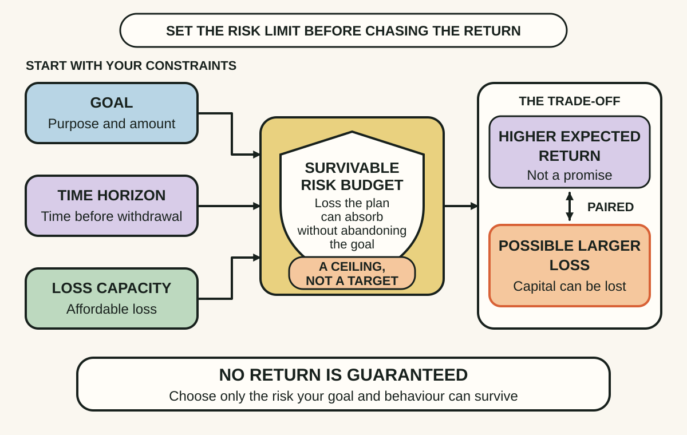
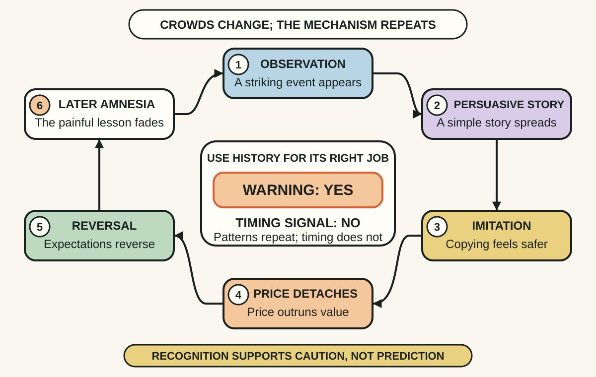
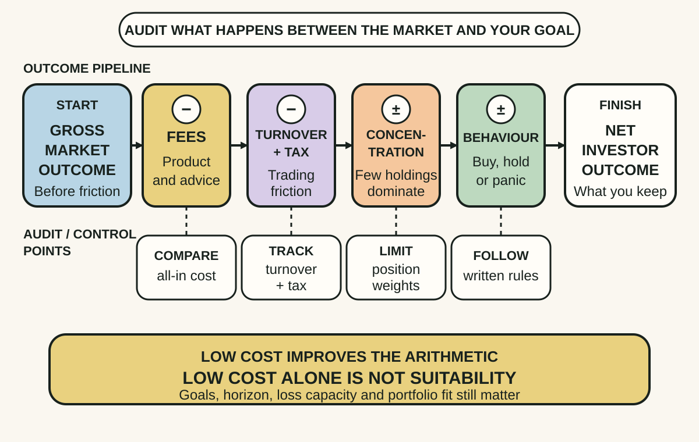

Daily lesson ·
The Four Pillars of Investing
Build an investing process that starts with survivable risk, recognises the social machinery of market booms and audits the costs and incentives between gross performance and the return you keep.
Idea 1
Treat the portfolio as a risk budget #
The idea
Bernstein's theory pillar begins with a trade-off: assets offering higher expected returns expose the investor to meaningful uncertainty and possible loss. Expected return is compensation for bearing risk, not a promise that the reward will arrive on schedule or at all.
Portfolio design therefore starts with the job the money must do, when it may be needed and how much loss the plan can absorb without failing. A return target chosen before those constraints can quietly demand a risk level the goal cannot survive.

Why it matters
A high historical average cannot rescue money that must be withdrawn during a fall. Starting with the goal's failure conditions prevents a return wish from becoming an accidental bet with essential money.
Apply it today
Choose one financial goal and write its amount, earliest use date and need for ready cash.
Write the largest temporary or permanent loss that would force the goal to change. Use those constraints as questions for research or licensed advice before considering expected return.
Caveat or failure mode
Higher risk does not guarantee a higher realised return, and a long horizon does not make loss impossible. Capacity depends on income, liabilities, health, access to cash and the purpose of the money, not age alone. Bernstein's US examples and allocation ranges are not Australian prescriptions.
Idea 2
Use history as a warning, not a market clock #
The idea
Bernstein's history and psychology pillars describe recurring speculative mechanisms: a persuasive new-era story attracts attention, visible gains draw in imitators, social proof strengthens the story and rising prices appear to validate it. Media, promoters and easy trading can accelerate the feedback.
History can make those conditions recognisable, but it cannot identify the exact top, bottom or date of reversal. A crowd can remain enthusiastic longer than an observer expects, and a genuine innovation can coexist with an unsustainable price.

Why it matters
Fear of missing out converts other people's buying into evidence, then converts price movement into proof of the original story. Naming that loop creates enough distance to investigate the investment rather than inherit the crowd's urgency.
Apply it today
Pick one investment receiving intense attention. Write the economic case in one sentence and the social proof in another.
Ask whether you would still research it if nobody else were discussing it. List the official document, independent evidence and loss scenario you would inspect before any action.
Caveat or failure mode
Popularity does not prove a bubble, and an old episode can be cherry-picked to resemble almost any new market. Social dynamics do not reveal intrinsic value or a turning date. Use the pattern to slow and broaden research, not to justify a confident short position or automatic rejection.
Idea 3
Audit what stands between gross and net return #
The idea
Bernstein's business pillar asks who is paid, how they are paid and what behaviour the arrangement encourages. Management fees, transaction costs, borrowing, turnover and tax consequences can reduce the return an investor keeps even when the underlying assets perform well.
A product also needs a meaningful benchmark and a portfolio that does the claimed job. Low cost is valuable but cannot repair unsuitable risk, hidden concentration, poor liquidity or an incentive to chase whichever product has recently become easiest to sell.

Why it matters
A strong headline return can conceal a weak comparison, large costs or risk that only becomes visible during withdrawal. Auditing the wrapper turns marketing claims into specific questions that a PDS, benchmark and holdings list can answer.
Apply it today
Choose one held or hypothetical managed fund and open its current PDS or official product page. Record its objective, benchmark, target market and major holdings.
Record ongoing, performance and transaction costs, liquidity limits and major concentrations. Compare the complete result with one simpler alternative without buying, selling or switching during the audit.
Caveat or failure mode
The cheapest product is not automatically diversified, liquid, tax-efficient or suitable, and professional advice can add value when needs are complex. Active funds can outperform in particular categories and periods; SPIVA is descriptive and benchmark-dependent. Personal tax and product decisions may require licensed Australian advice.
Knowledge check · 6 questions
Learning check
Answer all 6, then check your answers. Your first result stays in this browser, and each explanation appears after you check. A 3-question review can appear on the homepage from tomorrow.
6 questions not yet answered.
Today's experiment · 10 minutes
Run a no-transaction four-cell fund audit
- Choose one held or hypothetical fund and open its current PDS or official product page.
- Cell one: write the job, target market and benchmark the fund claims.
- Cell two: write its suggested time frame, liquidity limits and largest relevant loss risk.
- Cell three: write every ongoing, performance, transaction or exit cost you can find.
- Cell four: write its largest concentration and one incentive behind how it is promoted.
- Circle one unanswered question. Do not buy, sell or switch anything during this audit.
Observable result: You finish with a four-cell research note that exposes the product's job, risk, friction and concentration plus one question requiring better evidence.
Retrieval practice
Spaced recall
- From Superforecasting: what evidence would make a confident investment prediction more diagnostic rather than merely more vivid?
- From Getting to Yes: before accepting a fund's terms, what executable alternative should anchor the comparison?
Verification
Source notes
These links support the attributed claims and edition details; applications and extensions are labelled in the lesson.
- McGraw Hill: The Four Pillars of Investing, second edition
- William J. Bernstein: second-edition note and revision context
- Authorised publisher sample: foreword, contents and introduction
- Australian Government Moneysmart: Develop an investing plan
- Australian Government Moneysmart: Diversification
- Australian Government Moneysmart: Choosing a managed fund
- Australian Government Moneysmart: Do not get burned by investment hype
- S&P Dow Jones Indices: SPIVA Australia Year-End 2025
One-sentence takeaway